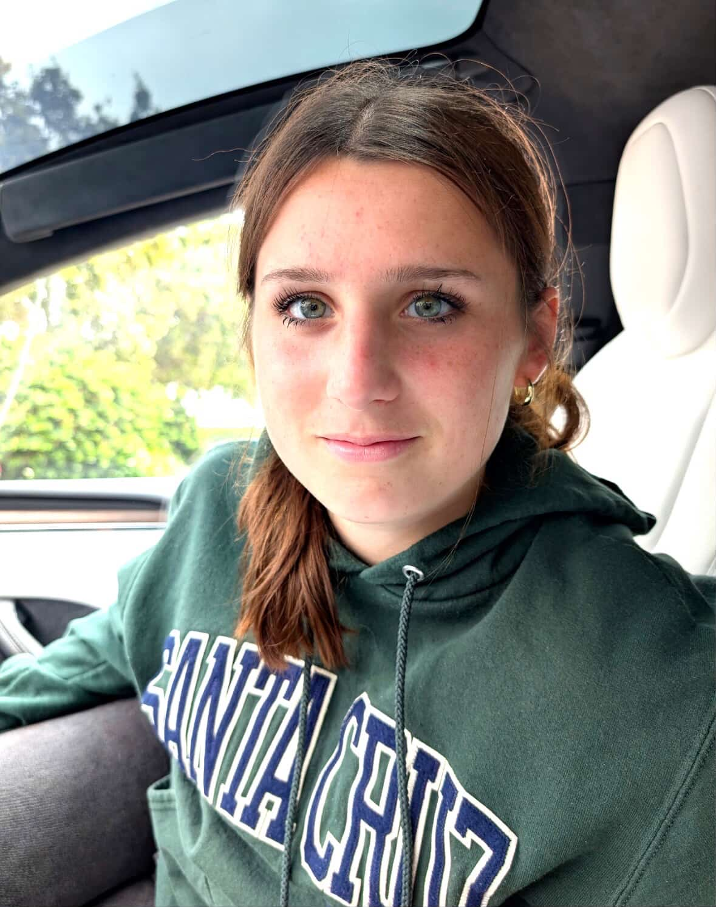
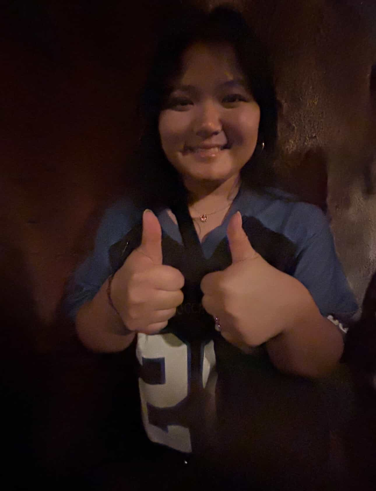

MEET THE SITTERS
ANNA LAC

Hi! I'm 16 years old and a junior at CVHS. I'm part of the choir program and the badminton team at school. I've been a leader for new students at school and I hope to put my experiences towards babysitting your kids!
I also have my driver's license for needs like picking up food!
SITTER PREFERENCES: I like working with older kids but I don't mind looking after younger kids too (potty-trained preferred)
ELLA CHAN

Hi! I'm 16 years old and a junior at CVHS. Im in choir and love to take part in the school musicals. I also like to sing and play guitar. I have baby sat before and love to work with kids!
SITTER PREFERENCES: I don't mind working with younger kids and will change diapers!
NIA ALTON

Hi, I’m 16 and currently a junior at CVHS. I am a licensed driver and I have completed CPR training. I do multiple sports and other activities like choir and artistic hobbies. I have done junior counseling for kids in summer camp ranged 5-12. I can be chill or energetic depending on the kids and their needs.
SITTER PREFERENCES: I am best with kids around ages 4 years and up!
AVERLY CHAIYASITH

Hi I’m Averly and I have tons of experience with children with disabilities. I am a junior at CVHS and I’m looking to be in the medical field in the future. I enjoy basketball, art, and singing. I’m looking forward to sitting your kids!
SITTER PREFERENCES: I work with all ages!
ELSA MADSEN
Hi! My name is Elsa and I’m a student at CVHS! I’m sixteen years old and I love theater and the arts! In my spare time I love to crochet, sew, and draw. I am a Teacher’s assistant and tutor as well as a camp counselor with training in working with children. I also have baby sitting experience with multiple ages!
SITTER PREFERENCES: I can work with potty trained children and up! I can help tutor younger children and I can also work late shifts on weekends.
MIKA GOMES
Hi, I’m Mika! I’m 17 years old and currently a senior at CVHS. I am a licensed driver and certified in CPR and AED. Outside of school, I participate in multiple sports, including Track & Field and Cross Country, as well as extracurriculars such as dance and choir. For the past three summers, I’ve volunteered at a children’s summer camp working with kids ages 5–12, and I also serve as a substitute dance teacher at my studio.
SITTER PREFERENCES: I work with all ages!